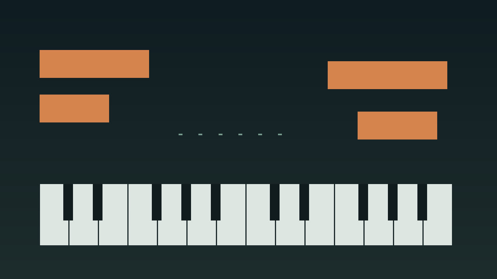

Eight studies, two piano variations, rests written in
Open Thirds

sounding voicing rest
Inner voice reference
This row is not part of the core count and it is not in the piano file. Empty bars stay marked rest.
Lengths chosen first
Container lengths and integer tempos were chosen before the notes. Study 01 is 8 bars at 72 BPM so the full container is the preview. seconds = bars * 4 * 60 / BPM. 8 bars at 72 BPM is 26.7 seconds.
Piano uses MIDI 36 to 84, at most six notes at once, and at most three in one hand. A simultaneous stack in one hand stays within 12 semitones. Notes below 60 are the left hand. Notes from 60 up are the right hand. The inner voice is monophonic, MIDI 48 to 76, reference-only, and is not part of the core count.
No pedal is encoded. Each chord is held only for its written duration and then released. The writing stays coherent without an undocumented sustain pedal.
Emotional quality is a compositional aim. It is not an automated validation result.
File contract
- Canonical score
- MIDI bytes
- Reopened validation
- MP3 preview
- Film and captions
- Stills
- Social drafts
- This catalog page
Set map
s01 Open Thirds
- s01.piano.a core
- s01.piano.b core
- s01.inner.a reference, not in the core count
- s01.inner.b reference, not in the core count
s02 Falling Alto
- s02.piano.a core
- s02.piano.b core
- s02.inner.a reference, not in the core count
- s02.inner.b reference, not in the core count
s03 Low Fifths
- s03.piano.a core
- s03.piano.b core
- s03.inner.a reference, not in the core count
- s03.inner.b reference, not in the core count
s04 Two-Note Call
- s04.piano.a core
- s04.piano.b core
- s04.inner.a reference, not in the core count
- s04.inner.b reference, not in the core count
s05 Suspended Room
- s05.piano.a core
- s05.piano.b core
- s05.inner.a reference, not in the core count
- s05.inner.b reference, not in the core count
s06 Plagal Space
- s06.piano.a core
- s06.piano.b core
- s06.inner.a reference, not in the core count
- s06.inner.b reference, not in the core count
s07 Late Question
- s07.piano.a core
- s07.piano.b core
- s07.inner.a reference, not in the core count
- s07.inner.b reference, not in the core count
s08 Cadence Room
- s08.piano.a core
- s08.piano.b core
- s08.inner.a reference, not in the core count
- s08.inner.b reference, not in the core count
Files
| Part | Role | Var | Count | BPM | Notes |
|---|---|---|---|---|---|
| s01.piano.a | piano | a | core | 72 | 25 |
| s01.piano.b | piano | b | core | 72 | 27 |
| s01.inner.a | inner-voice | a | inner voice reference | 72 | 3 |
| s01.inner.b | inner-voice | b | inner voice reference | 72 | 4 |
| s02.piano.a | piano | a | core | 60 | 22 |
| s02.piano.b | piano | b | core | 60 | 19 |
| s02.inner.a | inner-voice | a | inner voice reference | 60 | 3 |
| s02.inner.b | inner-voice | b | inner voice reference | 60 | 3 |
| s03.piano.a | piano | a | core | 54 | 18 |
| s03.piano.b | piano | b | core | 54 | 17 |
| s03.inner.a | inner-voice | a | inner voice reference | 54 | 3 |
| s03.inner.b | inner-voice | b | inner voice reference | 54 | 3 |
| s04.piano.a | piano | a | core | 84 | 9 |
| s04.piano.b | piano | b | core | 84 | 10 |
| s04.inner.a | inner-voice | a | inner voice reference | 84 | 2 |
| s04.inner.b | inner-voice | b | inner voice reference | 84 | 2 |
| s05.piano.a | piano | a | core | 66 | 27 |
| s05.piano.b | piano | b | core | 66 | 20 |
| s05.inner.a | inner-voice | a | inner voice reference | 66 | 3 |
| s05.inner.b | inner-voice | b | inner voice reference | 66 | 3 |
| s06.piano.a | piano | a | core | 50 | 22 |
| s06.piano.b | piano | b | core | 50 | 20 |
| s06.inner.a | inner-voice | a | inner voice reference | 50 | 3 |
| s06.inner.b | inner-voice | b | inner voice reference | 50 | 3 |
| s07.piano.a | piano | a | core | 80 | 18 |
| s07.piano.b | piano | b | core | 80 | 8 |
| s07.inner.a | inner-voice | a | inner voice reference | 80 | 3 |
| s07.inner.b | inner-voice | b | inner voice reference | 80 | 2 |
| s08.piano.a | piano | a | core | 58 | 19 |
| s08.piano.b | piano | b | core | 58 | 13 |
| s08.inner.a | inner-voice | a | inner voice reference | 58 | 4 |
| s08.inner.b | inner-voice | b | inner voice reference | 58 | 3 |
Use either the combined arrangement or the separate parts. Do not stack the part files on top of the combined file.
Recorded preview
Study 01, variation A, all 8 bars
The MP3 is the piano and the inner voice reference together. It is 26.697 seconds. preview, not a master. The film is 26.697 seconds and shows preview, not master.

Article draft
No program changes are encoded. A conventional GM player will normally use its default piano program for pitched channels unless configured otherwise; compatible GM channel 10 percussion is treated separately. Player behavior may vary.
No human listening audition was performed for this build.
What the validator checks
- file exists and parses
- PPQ 960
- encoded tempo and 4/4 meter
- one end-of-track at the declared container
- explicit note pairing
- boundaries, velocity, piano range 36 to 84, inner-voice range 48 to 76
- piano polyphony cap of six and monophonic inner voice
- hand stack within 12 semitones and reviewed leaps
- variation A and B differ in start, pitch, or duration
- variation A attack-time tuples are unique across the eight studies
- departure flags only outside the pitch-class set
- inner voice is not a copy of a piano event
- note-offs precede note-ons that share a tick
- no program changes or other channel messages
- reopened notes match the canonical score
- arrangement musical tracks match the individual files and carry no tempo
The GitHub repository is https://github.com/mizcausevic-dev/emotional-piano-progressions and it is public. The catalog page is https://mizcausevic-dev.github.io/emotional-piano-progressions/ .